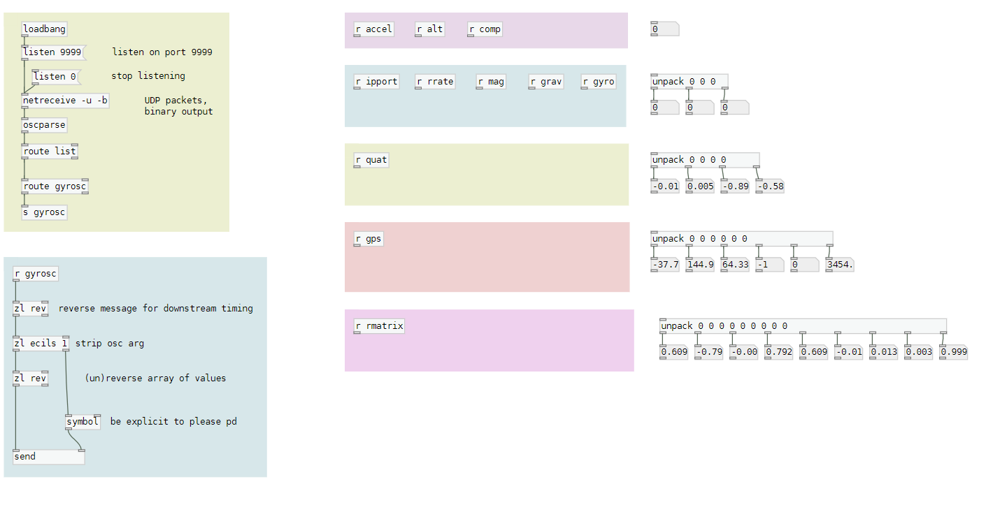

This patch receives OSC data from gyrosc , and tags them with a dynamic send object to be accessed globally via named receive objects. Available receives are shown on the right, and useful code snippets are provided for easy patching.
The default port is 9999.
Gyrosc is a very capable iOS application and can be configured using a .CSV file. I use the application in tandem with an PacketPunk - OSC logging on the DSTIKE ESP32 watch for logging data in the field.